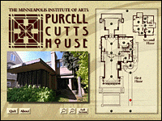
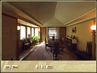

Tour the beautiful Prairie School style Purcell-Cutts house with the click of a mouse! Experience the intimacy and detail of this innovative 1913 home.
Using state-of-the-art Quicktime` Virtual reality technology and an interactive floorplan, this new CD-ROM allows you to control the flow, direction and timing of your tour.

When visiting the Purcell-Cutts house by mouse, you begin at the front door; the interactive floorplan allows you to choose where you go. You simply click on a hot spot and you will be transported to that spot- living room, kitchen, a bedroom. Then, as though you are standing in the room, you can turn in a 360 degree range.You can zoom in and out to view details of the house more closely. Click on another spot and go through a doorway and move into the next room.

A Prairie School Gem was developed for the MIA by the museum's Interactive Media Group with technical assistance from Macromedia Technologies, Incorporated.
System requirements:
Macintosh: 68040 processor (Power PC recommended), 8 MB RAM (16 MB recommended), 1 MB free disc space, double-speed CD-ROM Quicktime 2.0 (included on CD), System 7.0 or higher, monitor display of 256 colors (thousands recommended)Windows: 4 MB of RAM (8 MB recommended), double-speed CD-ROM drive, 2 MB free disk space, Quicktime 2.0 (included on CD), monitor display of 640X480 and 256 colors (thousands recommended)